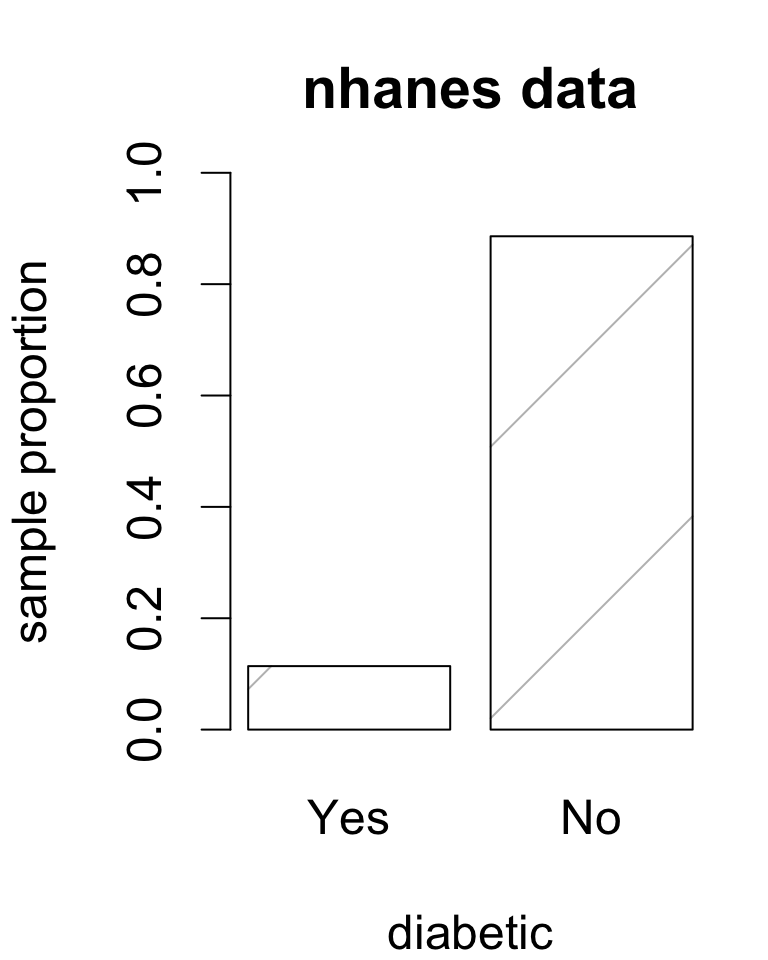
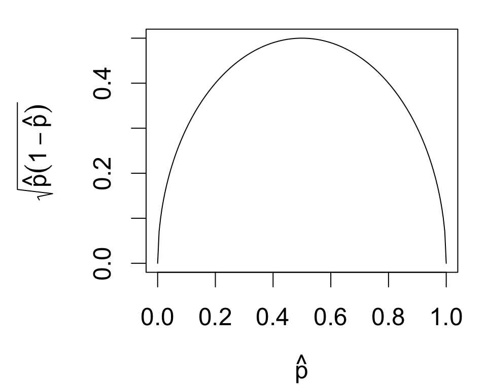
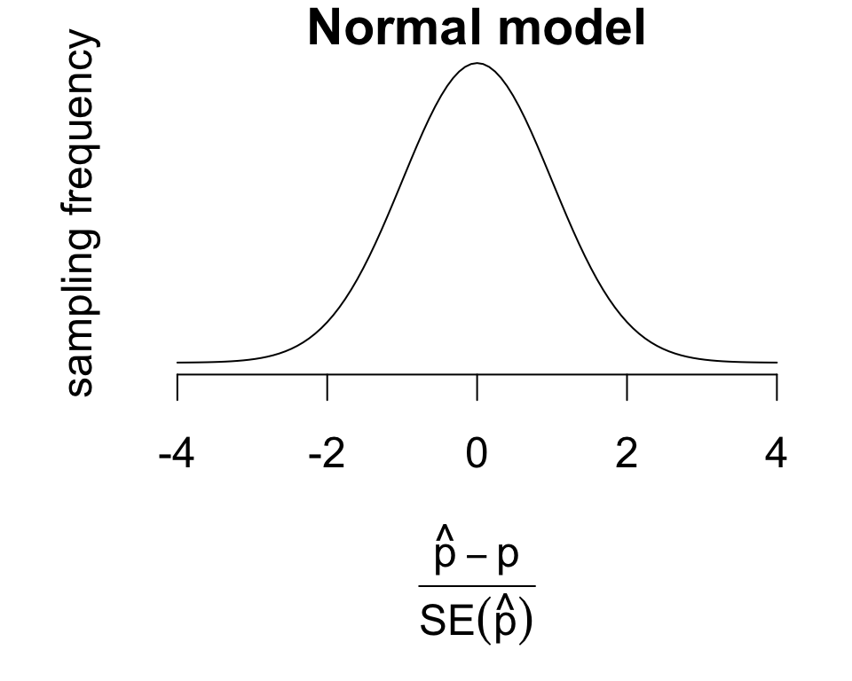
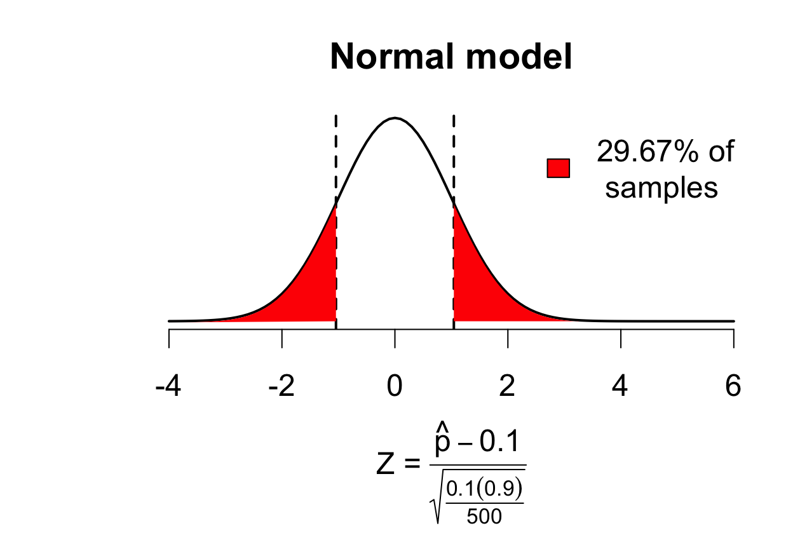
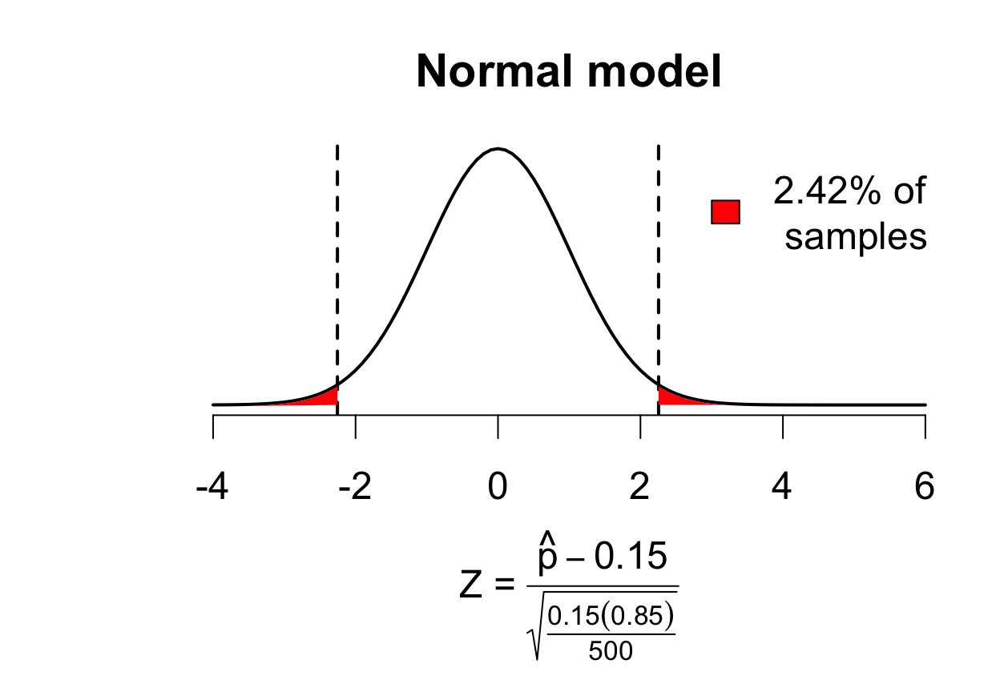
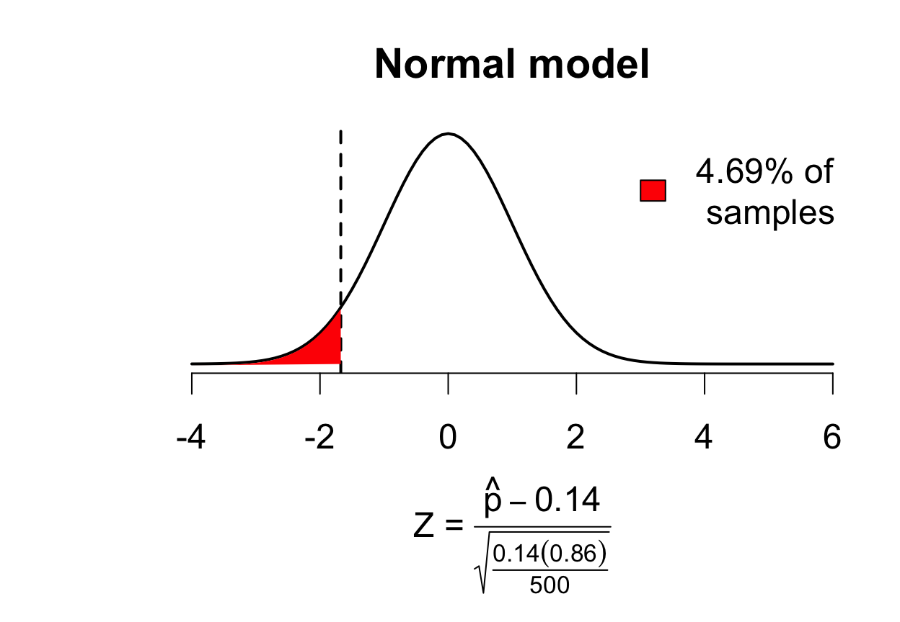
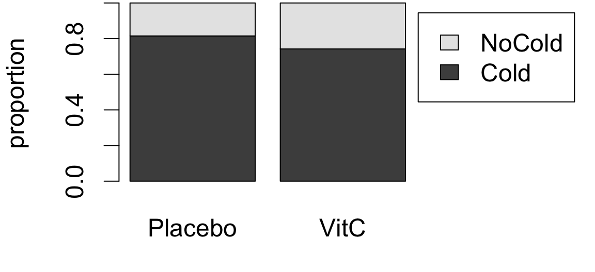
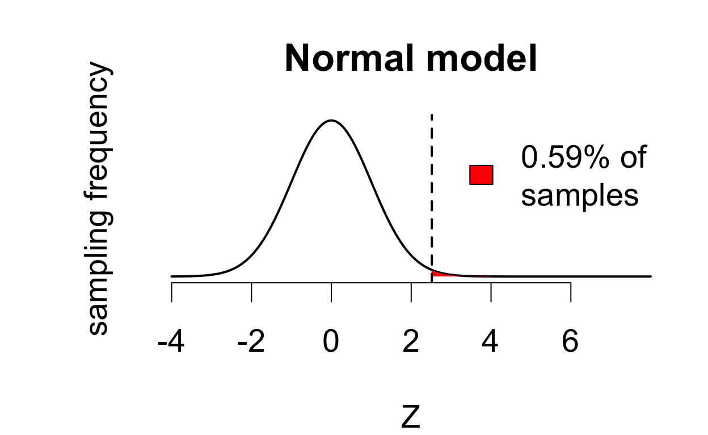

Inference for population proportions
An introduction to categorical data analysis
Today’s agenda
- [lecture] Inference for binomial proportions
- [lab] Tests for proportions in R
Binomial proportions
A binomial variable is a nominal categorical variable with two unique values.
Usually, binomial data record the presence/absence of an event, trait, or property of interest.
Inference for binomial data has a different flavor:
- non-numeric values \(\Rightarrow\) can’t compute usual statistics (mean, variance, etc.)
- focus on proportions instead
Example: prevalence of diabetes among US adults?
- estimate and standard error?
- confidence interval?
- hypothesis test?
Estimating proportions
| Yes | No | total | |
|---|---|---|---|
| count | 57 | 443 | 500 |
| proportion | 0.114 | 0.886 | 1 |
Estimated diabetes prevalence: 11.4%.
- NHANES data are a random sample of the U.S. adult population
- sample statistics should approximate population statistics
We’ll formalize this as estimating the population proportion \[p = \frac{\# \text{ individuals with diabetes}}{\text{total population size } N}\] Using the sample proportion \[\hat{p} = \frac{\# \text{ respondents with diabetes}}{\text{sample size } n}\]
The first step towards inference is a measure of precision for \(\hat{p}\). What is \(SE(\hat{p})\)?
SE for a sample proportion
Binomial data are most variable when \(p = 0.5\) and least variable when \(p \approx 0\) or \(1\)
Measure of spread for binomial data: \[\sqrt{\hat{p}(1 - \hat{p})}\]
- highest when \(\hat{p} \approx 0.5\)
- lowest when \(\hat{p} \approx 0 \text{ or } 1\)
Analogous to estimating a mean: \[ SE\left(\hat{p}\right) = \frac{\text{spread}}{\sqrt{\text{sample size}}} = \sqrt{\frac{\hat{p}(1 - \hat{p})}{n}} \]

Sampling distribution of \(\hat{p}\)
The sample proportion \(\hat{p}\) has a sampling distribution that can be approximated by a normal model, provided:
- \(\hat{p}\) isn’t too close to 0 or 1
- \(n\) is sufficiently large
A common condition to check:
\[n\hat{p} \geq 10\text{ and }n(1 - \hat{p}) \geq 10\]

This model can be used to construct hypothesis tests and confidence intervals for \(p\).
Confidence interval for \(p\)
A confidence interval for a binomial proportion \(p\) is:
\[\hat{p} \pm c \times SE(\hat{p})\]
The critical value \(c\) comes from the normal model.
empirical rule:
- \(c = 1\) gives a 68% interval
- \(c = 2\) gives a 95% interval
- \(c = 3\) gives a 99.7% interval
for a \((1 - \alpha)\times 100 \%\) confidence interval use the \(1 - \frac{\alpha}{2}\) quantile of the normal model
Example: diabetes prevalence
| p.hat | se | n |
|---|---|---|
| 0.114 | 0.01421 | 500 |
It is estimated that the proportion of the U.S. adult population with diagnosed diabetes is 11.4% (SE = 1.42%).
Check assumptions for the normal model:
\[ 500\times 0.114 = 57 \geq 10 \quad\text{and}\quad 500\times 0.886 = 443 \geq 10 \]
95% confidence interval for diabetes prevalence:
\[ 0.114 \pm 2\times 0.01421 = (0.0881, 0.1459) \]
With 95% confidence, the proportuion of U.S. adults with diagnosed diabetes is estimated to be between 8.81% and 14.59%.
Hypothesis tests for \(p\)
To test whether true prevalence is 10%: \[ \begin{cases} H_0: &p = 0.1 \\ H_A: &p \neq 0.1 \end{cases} \]
We can use the test statistic:
\[ Z = \frac{\hat{p} - p_0}{\sqrt{\frac{p_0 (1 - p_0)}{n}}} = \frac{\hat{p} - 0.1}{\sqrt{\frac{0.1 (0.9)}{500}}} \] Under \(H_0\), the sampling distribution of \(Z\) is approximated by a normal model, provided:
- \(np_0 \geq 10\)
- \(n(1 - p_0) \geq 10\)

Here \(p = P(|Z| > 1.043) = 0.2967\), so:
the data provide no evidence that prevalence differs from 10%.
Hypothesis tests for \(p\)
To test whether true prevalence is 15%: \[ \begin{cases} H_0: &p = 0.15 \\ H_A: &p \neq 0.15 \end{cases} \]
We can use the test statistic:
\[ Z = \frac{\hat{p} - p_0}{\sqrt{\frac{p_0 (1 - p_0)}{n}}} = \frac{\hat{p} - 0.15}{\sqrt{\frac{0.15 (0.85)}{500}}} \] Under \(H_0\), the sampling distribution of \(Z\) is approximated by a normal model, provided:
- \(np_0 \geq 10\)
- \(n(1 - p_0) \geq 10\)

Here \(p = P(|Z| > 2.254) = 0.0242\), so:
the data provide moderate evidence that prevalence differs from 15%.
Hypothesis tests for \(p\)
To test if prevalence is below 14%: \[ \begin{cases} H_0: &p = 0.14 \\ H_A: &p < 0.14 \end{cases} \]
We can use the test statistic:
\[ Z = \frac{\hat{p} - p_0}{\sqrt{\frac{p_0 (1 - p_0)}{n}}} = \frac{\hat{p} - 0.14}{\sqrt{\frac{0.14 (0.86)}{500}}} \]
Under \(H_0\), the sampling distribution of \(Z\) is approximated by a normal model, provided:
- \(np_0 \geq 10\)
- \(n(1 - p_0) \geq 10\)

Here \(p = P(Z < 1.676) = 0.0469\), so:
the data provide moderate evidence that prevalence is less than 14%.
Inference for a proportion in R
Inference using the normal model in R:
- Construct a table of the frequency distribution
- Pass the table to
prop.test()
Remarks about output:
X-squaredgives \(Z^2\)correct = Fperforms the test without continuity correction
# variable of interest
dia <- nhanes$diabetes
# pass table to prop.test
table(dia) |>
prop.test(p = 0.1, alternative = 'two.sided',
conf.level = 0.95, correct = F)
1-sample proportions test without continuity correction
data: table(dia), null probability 0.1
X-squared = 1.0889, df = 1, p-value = 0.2967
alternative hypothesis: true p is not equal to 0.1
95 percent confidence interval:
0.0890369 0.1448491
sample estimates:
p
0.114 The data provide no evidence that diabetes prevalence among U.S. adults differs from 10%. With 95% confidence, prevalence is estimated to be between 8.90% and 14.48%, with a point estimate of 11.4% (SE = 1.42%).
correct = F?
A “continuity correction” reduces approximation error for the normal model.
1-sample proportions test without continuity correction
data: table(dia), null probability 0.1
X-squared = 1.0889, df = 1, p-value = 0.2967
alternative hypothesis: true p is not equal to 0.1
95 percent confidence interval:
0.0890369 0.1448491
sample estimates:
p
0.114
1-sample proportions test with continuity correction
data: table(dia), null probability 0.1
X-squared = 0.93889, df = 1, p-value = 0.3326
alternative hypothesis: true p is not equal to 0.1
95 percent confidence interval:
0.08814952 0.14594579
sample estimates:
p
0.114 Omitting the correct argument implements the correction by default.
Exact inference for a proportion
The test can also be performed using the exact sampling distribution obtained from a binomial probability model.
Exact binomial test
data: 57 and 500
number of successes = 57, number of trials = 500, p-value = 0.2964
alternative hypothesis: true probability of success is not equal to 0.1
95 percent confidence interval:
0.0874949 0.1451685
sample estimates:
probability of success
0.114 Inputs:
xgives the number of occurrences of the category of interestngives the sample size
Two-way tables
Two-way tables or “contingency” tables compare two categorical variables.
| Cold | NoCold | n | |
|---|---|---|---|
| Placebo | 335 | 76 | 411 |
| VitC | 302 | 105 | 407 |

- vitamin C and placebo treatments were randomly allocated to 818 volunteers
- volunteers took treatments daily for a cold season
- study recorded how many volunteers came down with a cold
Is vitamin C effective at preventing common cold?
Inference for two proportions
We can first consider inferences on the difference in proportions:
\[\delta = p_\text{placebo} - p_\text{vitC}\]
Inferences are based on groupwise estimates:
point estimate: \(\hat{p}_\text{placebo} - \hat{p}_\text{vitC}\)
standard error: \(\sqrt{SE^2(\hat{p}_\text{placebo}) + SE^2(\hat{p}_\text{vitC})}\)
When both groups meet the conditions for inference for one proportion, the statistic
\[ Z = \frac{\hat{p}_1 - \hat{p}_2 - \delta}{SE(\hat{p}_1 - \hat{p}_2)} \] has a sampling distribution well-approximated by a normal model.
Confidence interval for the difference
\[ \hat{p}_\text{placebo} - \hat{p}_\text{vitC} \pm c\times SE(\hat{p}_\text{placebo} - \hat{p}_\text{vitC}) \] For a \((1 - \alpha)\times 100\%\) confidence interval the critical value \(c\) is chosen to be the \(\left(1 - \frac{\alpha}{2}\right)\) quantile of the normal model.
point estimate: \(\hat{p}_\text{placebo} - \hat{p}_\text{vitC} = 0.0731\)
standard error: \(\sqrt{SE^2(\hat{p}_\text{placebo}) + SE^2(\hat{p}_\text{vitC})} = 0.0289\)
critical value for 95% interval:
qnorm(1 - 0.05/2) = 1.959964
95% confidence interval: (0.0164, 0.1298)
With 95% confidence, the prevalence of common cold is estimated to be between 1.64% and 12.98% lower among adults who take daily vitamin C supplements.
Tests for a difference in proportions
We can also test whether vitamin C prevents common cold:
\[ \begin{cases} H_0: &p_\text{placebo} - p_\text{vitC} = 0\\ H_A: &p_\text{placebo} - p_\text{vitC} > 0 \end{cases} \]
Hypothesis tests use the test statistic:
\[Z = \frac{\hat{p}_1 - \hat{p}_2}{\sqrt{\hat{p}(1 - \hat{p})\left(\frac{1}{n_1} + \frac{1}{n_2}\right)}}\]
With a slightly different SE where: \[\hat{p} = \frac{n_1\hat{p}_1 + n_2\hat{p}_2}{n_1 + n_2}\]

Here \(p = P(Z > 2.517) = 0.0059\), so:
the data provide strong evidence that vitamin C prevents common cold.
Inference in R
Three steps:
Construct a table of the frequency distribution by group
- outcomes should be columns
- groups should be rows
Pass to
prop.test()
The alternative reads the same way as in t.test.
# variables of interest
treatment <- vitamin$treatment
outcome <- vitamin$outcome
# pass table to prop.test
table(treatment, outcome) |>
prop.test(alternative = 'greater',
correct = F)
2-sample test for equality of proportions without continuity correction
data: table(treatment, outcome)
X-squared = 6.3366, df = 1, p-value = 0.005914
alternative hypothesis: greater
95 percent confidence interval:
0.02548153 1.00000000
sample estimates:
prop 1 prop 2
0.8150852 0.7420147 The data provide strong evidence that vitamin C prevents common cold (Z = 2.517, p = 0.0059). With 95% confidence, the reduction in probability is estimated to be at least 0.0255, with a point estimate of 0.0731 (SE = 0.0289).
Sampling and two-way tables
Consider this case-control study:
| Smokers | NonSmokers | n | |
|---|---|---|---|
| Cancer | 83 | 3 | 86 |
| Control | 72 | 14 | 86 |
This is an example of outcome-based sampling:
- 86 lung cancer patients and 86 controls
- can’t estimate cancer prevalence
A different approach to inference is needed to analyze this data. Next time:
- tests of association in two-way tables
- inference for risk and odds ratios

STAT218